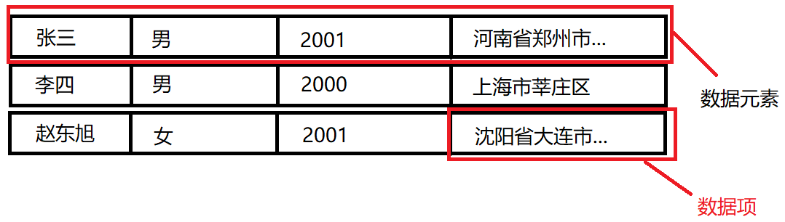
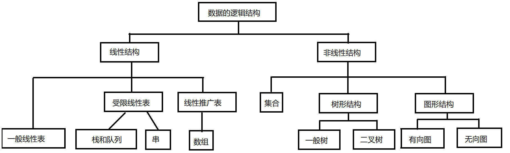

1.1 简介
1.1.1 基本概念
1. 基本概念
数据是信息的载体，是描述客观事物属性的数、字符及所有能输入到计算机中并被计算机程序识别和处理的符号的集合。
2. 数据元素
数据元素是数据的基本单位。一个数据元素可由若干数据项组成，数据项是构成数据元素的不可分割的最小单位。如下，一条学生的信息就是一个数据元素，一个数据元素是有一个个数据项构成。

3. 数据对象
数据对象是具有相同性质的数据元素的集合，是数据的一个子集。例如，整数数据对象是{±1，±2，...}
4. 数据类型
数据类型是一个值得集合和定义在此集合上的一组操作的总称。
- 原子类型。其值不可再分的数据类型。
- 结构类型。其值可以再分解为若干成分的数据类型。
- 抽象数据类型。抽象数据组织及其与之相关的操作。
5. 数据结构
数据结构是相互之间存在一种或多种特定关系的数据元素的集合。在任何问题中，数据元素都不是孤立存在的，它们之间存在某种关系，这种数据元素相互之间的关系称为结构。数据结构包括三方面的内容：逻辑结构、存储结构和数据的运算。
数据的逻辑结构和存储结构是密不可分的两个方面，一个算法的设计取决于所选定的逻辑结构，而算法的实现依赖于所采用的存储结构。
1.1.2 三要素
数据的逻辑结构
逻辑结构是指数据元素之间的逻辑关系，即从逻辑关系上描述数据。它与数据的存储无关，是独立于计算机的。

数据的存储结构
存储结构是指数据结构在计算机中的表示，即物理结构。它包括数据元素的表示和关系的表示。数据的存储结构是用计算机语言实现的逻辑结构，它依赖于计算机语言。数据的存储结构主要有顺序存储、链式存储、索引存储和散列存储。
- 顺序存储。把逻辑上相邻的元素存储在物理位置上也相邻的存储单元中，元素之间的关系由存储单元的邻接关系来体现。优点是可以随机存取，每个元素占用最少的存储空间；缺点是只能使用相邻的一整块存储单元，因此可能产生较多的外部碎片。典型代表：数组。
- 链式存储。不要求逻辑上相邻的元素在物理位置上也相邻，借助指示元素存储地址的指针来表示元素之间的逻辑关系。其优点是不会出现碎片现象，能充分利用所有存储单元；缺点是每个元素因存储指针而占用额外的存储空间，且只能实现顺序存取。典型代表：链表。
- 索引存储。在存储元素信息的同时，还建立附加的索引表。索引表中的每项称为索引项，索引项的一般形式是(关键字,地址）。其优点是检索速度快；缺点是附加的索引表额外占用存储空间。此外，增加和删除数据时也要修改索引表，故会消耗大。
- 散列存储。根据元素的关键字直接计算出该元素的存储地址，又称哈希存储。其有点是检索、增加和删除结点的操作都很快；缺点是若散列函数不好，则可能出现元素存储单元的冲突，解决冲突会增加时间和空间开销。
数据的运算
施加在数据上的运算包括运算的定义和实现。运算的定义是针对逻辑结构的，指出运算的功能；运算的实现是针对存储结构的，指出运算的具体操作步骤。